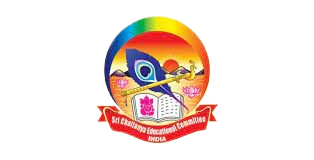

Welcome to my portfolio! I'm Balaji Parla,
explore my projects related to

Academic Background

HIGH SCHOOL(2015-2018)
I Completed my Higher Secondary Education at Sri Vishweshwaraiah School, Ballari

GRADUATION(2018-2020)
I completed my 11th and 12th grades at Sri Chaitanya Pre-University
College, Ballari.
UNDER GRADUATION(2021-2025)
Completed Bachelor of Technology (B.Tech) at CMR University, Bangalore.
I am currently pursuing a Bachelor of Technology (B.Tech) in Computer Science at CMR University, Bangalore, I possess a strong foundation in front-end development languages like HTML, CSS, and JavaScript, allowing me to build user-friendly and visually appealing web interfaces. This skillset provides a solid base for exploring frameworks like React, which I'm actively learning to enhance my ability to create dynamic and interactive user experiences.
Technical Skills:
- HTML (Intermediate)
- CSS (Intermediate)
- JavaScript (Basic)
- Python (Basic)
Soft Skills:
- Problem-solving: I excel at breaking down complex technical challenges and finding innovative solutions.
- Teamwork:I thrive in collaborative environments, effectively communicating ideas and working seamlessly towards shared goals.
- Communication: I articulate technical concepts clearly, aiding collaboration with peers and faculty.
- Adaptability: I quickly embrace new technologies and adjust to changing project requirements.